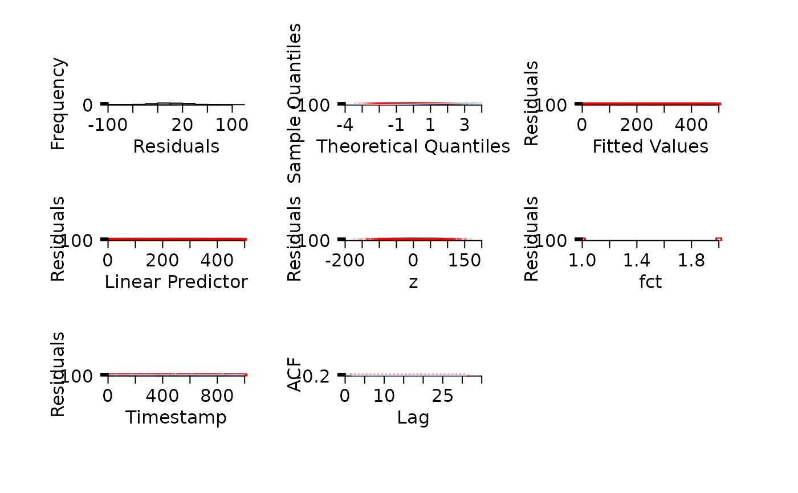

This function produces (pretty) diagnostic plots of residuals. Plots can include standard diagnostic plots (i.e., residuals versus fitted values, residuals versus the linear predictor, a histogram of residuals and quantile-quantile plots), diagnostic plots for time series (i.e., time series of residuals and autocorrelation functions of residuals); and other helpful plots (i.e., residuals against factor levels/continuous covariates). For large datasets, these plots can be produced for random subsets of the data to aid interpretation.
pretty_residuals(
residuals,
fv = NULL,
lp = fv,
vars = NULL,
timestamp = NULL,
timestamp_fct = NULL,
timestamp_fct_level = NULL,
dat = NULL,
plot = 1:7,
rand_pc = NULL,
plot_rand_pc = 3:6,
points_args = list(pch = 21, col = scales::alpha("black", 0.3), bg =
scales::alpha("black", 0.3), cex = 0.5),
lines_args = list(col = scales::alpha("black", 0.9)),
pretty_axis_args = list(side = 1:2, pretty = list(n = 5), control_axis = list(las =
TRUE, cex.axis = 1.5)),
mtext_args = list(`1` = list(list(side = 1, text = "Residuals", line = 2.5), list(side
= 2, text = "Frequency", line = 2.5)), `2` = list(list(side = 1, text =
"Theoretical Quantiles", line = 2.5), list(side = 2, text = "Sample Quantiles", line
= 2.5)), `3` = list(list(side = 1, text = "Fitted Values", line = 2.5), list(side =
2, text = "Residuals", line = 2.5)), `4` = list(list(side = 1, text =
"Linear Predictor", line = 2.5), list(side = 2, text = "Residuals", line = 2.5)), `5`
= lapply(vars, function(var) {
list(list(side = 1, text = var, line = 2.5),
list(side = 2, text = "Residuals", line = 2.5))
}), `6` = list(list(side = 1, text =
"Timestamp", line = 2.5), list(side = 2, text = "Residuals", line = 2.5)), `7` =
list(list(side = 1, text = "Lag", line = 2.5), list(side = 2, text = "ACF", line =
2.5)))
)A numeric vector of residuals from a model.
A numeric vector of fitted values from a model.
A numeric vector which defines the values of the linear predictor from a model.
A character vector which defines the names of variables in a dataframe (see dat, below) against which residuals will be plotted if plot includes option 5 (see below).
A character which defines the name of a variable in dat which refers to time stamps. This is useful for models of data collected through time. If NULL and this plot is selected, residuals are plotted against an index for the selected data.
(optional) A character which defines the name of a variable in dat which distinguishes independent time series. If timestamp is provided, it is desirable to plot the residuals ~ time stamp for only one of these levels (see timestamp_fct_level).
An identifier of the independent time series in timestamp_fct to be plotted. If not provided, the function selects the longest time series.
A dataframe containing columns named as specified in vars. This should be the same dataframe that was used to fit the model from which residuals are extracted, although it can include extra variables not included in the model.
A numeric vector (1:7) which defines the plots to produce (see Details, below).
A number which defines a percentage of residuals to plotted. If specified, a random subset of residuals, chosen according to a uniform distribution, are plotted. This is useful for some plots of residuals (e.g. residuals versus fitted values) which can be difficult to interpret with large datasets. However, note that some plots of residuals (e.g. quantile-quantile plots) respond poorly to selecting samples of residuals, and this option is not recommended in those cases - see plot_rand_pc, below.
A numeric input which defines which plots will use thinned residuals. This plots 3 - 6 by default (plots 1, 2 and 7 are still interpretable with large amounts of data.) The residual plot that corresponds to each plot number is explained in Details.
A named list of arguments that is passed to points to add points to appropriate plots.
A named list that is passed to lines to add lines to appropriate plots.
A named list of arguments that is passed to pretty_axis which is used to create pretty axes. For simplicity, this is implemented for most plots.
A named list of arguments that is passed to mtext to add labels to each plot. List names correspond to plot numbers (see Details). The default is a nested list which tries to add suitable labels in suitable locations to all plots, but this can be edited.
Diagnostic plots of residuals.
Seven types of diagnostic plots can be produced: 1, a histogram of residuals; 2, a quantile-quantile plot; 3, residuals versus fitted values; 4, residuals versus linear predictor; 5, residuals against one or more user-defined variables; 6, residuals against a time stamp/index; 7, an autocorrelation function of residuals. pretty_axis is used to control axes. This can be customised but changes affect all plots. Axis labels are implemented with mtext via mtext_args to enable maximum user control over axes. The graphical characteristics of points and lines are specified in points_args and lines_args, respectively, and changes to these arguments affect all relevant plots. This implementation reflects a balance between user flexibility and simplicity.
#### Simulate and model data
set.seed(1)
x <- 1:1000
y <- rnorm(length(x), x*0.5, 30)
dat <- data.frame(x = x, y = y)
dat$fct <- sample(1:2, size = nrow(dat), replace = TRUE)
dat$z <- rnorm(nrow(dat), dat$x*0.01, 50)
m1 <- lm(y ~ x, data = dat)
#### Plot residuals using default options
pp <- graphics::par(mfrow = c(3, 3))
pretty_residuals(residuals = stats::resid(m1),
fv = fitted(m1),
lp = fitted(m1),
vars = c("z", "fct"),
timestamp = "x",
dat = dat,
)
#> plot (6) residuals ~ time stamp: 'timestamp_fct' is NULL; assuming 'dat' only contains one independent time series.
graphics::par(pp)
#### Plot a single plot
pretty_residuals(residuals = stats::resid(m1), plot = 7)
#### Customisation of axes is via pretty_axis_args; changes affect most plots.
pp <- graphics::par(mfrow = c(3, 3), oma = c(3, 3, 3, 3), mar = c(2, 2, 2, 2))
pretty_residuals(residuals = stats::resid(m1),
fv = fitted(m1),
lp = fitted(m1),
vars = c("z", "fct"),
timestamp = "x",
dat = dat,
pretty_axis_args = list(side = 1:2, pretty = list(n = 10))
)
#> plot (6) residuals ~ time stamp: 'timestamp_fct' is NULL; assuming 'dat' only contains one independent time series.
graphics::par(pp)
#### Customisation of graphics is via points_args() and lines_args()
# ... which are implemented for the relevant plots:
pp <- graphics::par(mfrow = c(3, 3), oma = c(3, 3, 3, 3))
pretty_residuals(residuals = stats::resid(m1),
fv = fitted(m1),
lp = fitted(m1),
vars = c("z", "fct"),
timestamp = "x",
dat = dat,
points_args = list(col = scales::alpha("red", 0.3)),
lines_args = list(lwd = 1, col = "skyblue")
)
#> plot (6) residuals ~ time stamp: 'timestamp_fct' is NULL; assuming 'dat' only contains one independent time series.
graphics::par(pp)

#### There are several customisation options for plotting observations against time stamps
# 'timestamp', 'timestamp_fct' and 'timestamp_fct_level' enable a specific time series to be
# ... plotted:
pretty_residuals(residuals = stats::resid(m1),
fv = fitted(m1),
lp = fitted(m1),
dat = dat,
plot = 6,
timestamp = "x",
timestamp_fct = "fct",
timestamp_fct_level = 1
)
# If 'timestamp' is not provided, an index is plotted:
pretty_residuals(residuals = stats::resid(m1),
fv = fitted(m1),
lp = fitted(m1),
dat = dat,
plot = 6,
timestamp = NULL,
timestamp_fct = "fct",
timestamp_fct_level = 1)
#> plot (6) residuals ~ time stamp: 'timestamp' is NULL so using an index for selected data.
# If 'timestamp_fct' is not provided, data are assumed to comprise a single time series.
pretty_residuals(residuals = stats::resid(m1),
fv = fitted(m1),
lp = fitted(m1),
dat = dat,
plot = 6,
timestamp = "x",
timestamp_fct = NULL,
)
#> plot (6) residuals ~ time stamp: 'timestamp_fct' is NULL; assuming 'dat' only contains one independent time series.
# If 'timestamp_fct_level' is not provided, the longest time series is chosen by default:
pretty_residuals(residuals = stats::resid(m1),
fv = fitted(m1),
lp = fitted(m1),
dat = dat,
plot = 6,
timestamp = "x",
timestamp_fct = "fct")
#> plot (6) residuals ~ time stamp: selecting the 'timestamp_fct' with the longest time series.